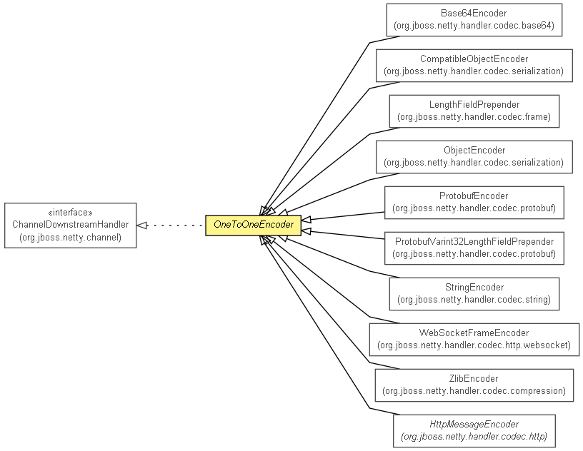

org.jboss.netty.handler.codec.oneone
类 OneToOneEncoder
java.lang.Object
 org.jboss.netty.handler.codec.oneone.OneToOneEncoder
org.jboss.netty.handler.codec.oneone.OneToOneEncoder
- 所有已实现的接口：
- ChannelDownstreamHandler, ChannelHandler
- 直接已知子类：
- Base64Encoder, CompatibleObjectEncoder, HttpMessageEncoder, LengthFieldPrepender, ObjectEncoder, ProtobufEncoder, ProtobufVarint32LengthFieldPrepender, StringEncoder, WebSocketFrameEncoder, ZlibEncoder
public abstract class OneToOneEncoder
- extends java.lang.Object
- implements ChannelDownstreamHandler

Transforms a write request into another write request. A typical setup for
TCP/IP would be:
ChannelPipeline pipeline = ...;
// Decoders
pipeline.addLast("frameDecoder", new DelimiterBasedFrameDecoder(80, Delimiters.nulDelimiter()));
pipeline.addLast("customDecoder", new OneToOneDecoder() { ... });
// Encoder
pipeline.addLast("customEncoder", new OneToOneEncoder() { ... });
| 从类 java.lang.Object 继承的方法 |
equals, getClass, hashCode, notify, notifyAll, toString, wait, wait, wait |
handleDownstream
public void handleDownstream(ChannelHandlerContext ctx,
ChannelEvent evt)
throws java.lang.Exception
- 从接口
ChannelDownstreamHandler 复制的描述
- 处理指定的下游事件.
- 指定者：
- 接口
ChannelDownstreamHandler 中的 handleDownstream
- 参数：
ctx - 处理器的上下文对象evt - 要处理或拦截的事件
- 抛出：
java.lang.Exception